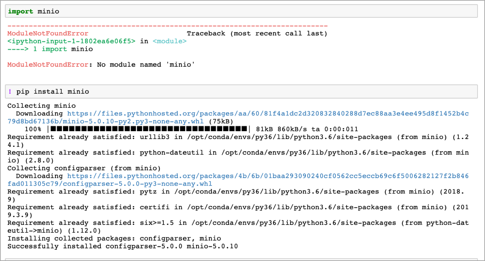

Python 과 MINIO : minio 라이브러리¶
IRIS 대화형 분석 에는 RStudio 와 함께 Jupyter Notebook 을 임베딩하여 Python 등을 쉽게 사용할 수 있는 환경을 제공하고 있습니다.
여기서는 IRIS 클라우드의 사용자에게 기본 Storage 로 제공하고 있는 MINIO 에 엑세스하는 방법을 python 예제로 설명합니다.(python 3.6)
설치하는 package : minio¶
python 에서 MINIO 에 엑세스하기 위해서 minio 라이브러리(minio) 를 사용 합니다.
minio 라이브러리가 설치 되어 있지 않다면 아래 처럼 확인 후에 pip 로 설치합니다.
minio API 의 모든 reference 확인은 -> Python Client API Reference
여기서는 file 을 MINIO 에 upload 하고, download 하는 방법만 설명하겠습니다.
MINIO 에 파일을 업로드하기¶
나의 Jupyter Notebook 의 로컬 path 에 있는 IRIS_v2_example.py 라는 file 을 MINIO 에 업로드하는 예제입니다.
코드 예제
fput_object 함수를 사용합니다.
fput_object(bucket_name, object_name, file_path, content_type='application/octet-stream', metadata=None, progress=None, part_size=510241024)
./example_code/python/example_code/IRIS_v2_example.py 파일을 MINIO 에 current 디렉토리에 업로드합니다.
from minio import Minio
from minio.error import ResponseError
minioClient = Minio('my.end_point', # ip:port or URL
access_key='*****',
secret_key='******',
secure=False)
# file upload
try:
minioClient.fput_object('my-bucket', 'IRIS_v2_example.py', './example_code/python/example_code/IRIS_v2_example.py')
except ResponseError as err:
print(err)
MINIO 의 object 를 로컬 path 에 파일로 다운로드¶
fget_object 함수를 사용합니다.
fget_object(bucket_name, object_name, file_path, request_headers=None)
from minio import Minio
from minio.error import ResponseError
minioClient = Minio('my.end_point', # ip:port or URL
access_key='*****',
secret_key='******',
secure=False)
try:
minioClient.fget_object('my-bucket', 'IRIS_v2_example.py', 'down_IRIS_v2_example.py')
except ResponseError as err:
print(err)